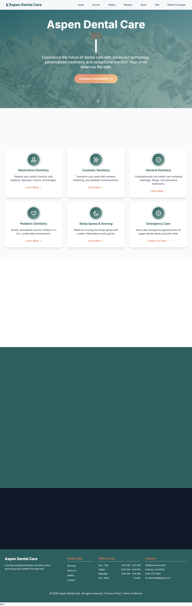

Public Showcase
Modern dental experience, now in a public portfolio format.
This repo is the public showcase for Aspen Dental Care. It shares the visual direction, launch look, and website snapshot while the production source remains private.
Live Homepage Screenshot
Captured with a delayed shot to avoid blank renders.
